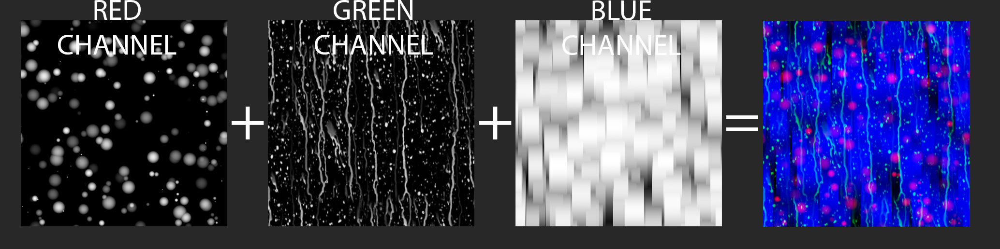
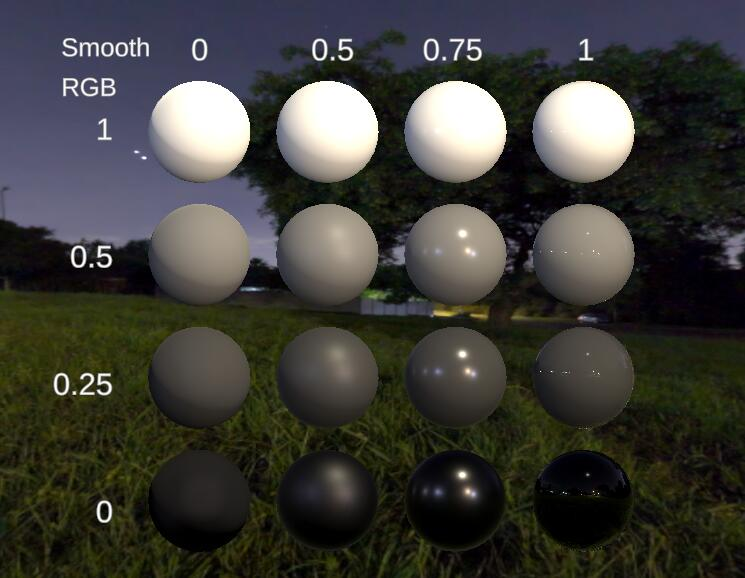
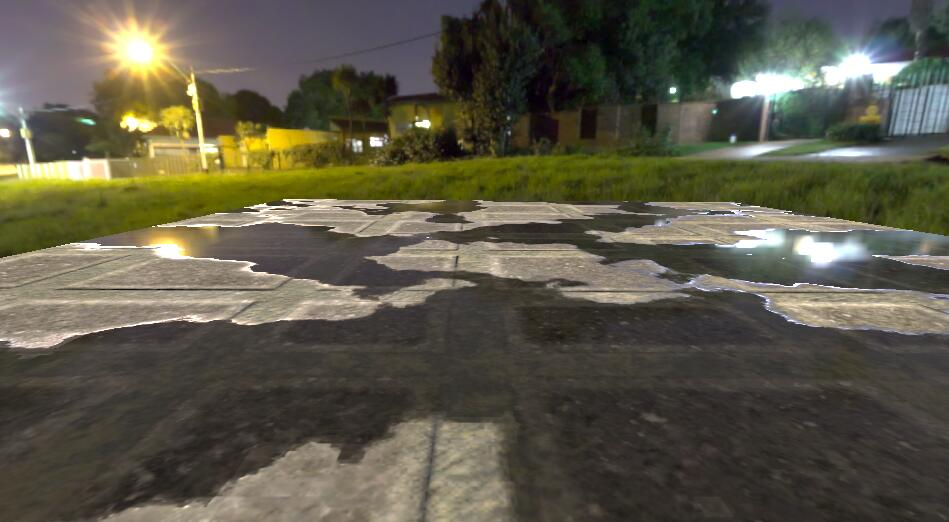
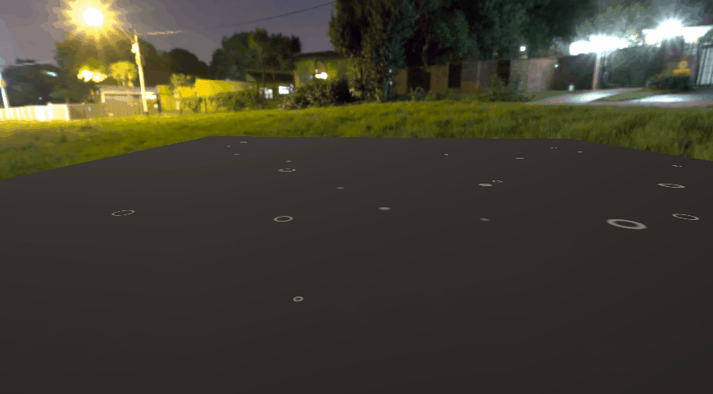
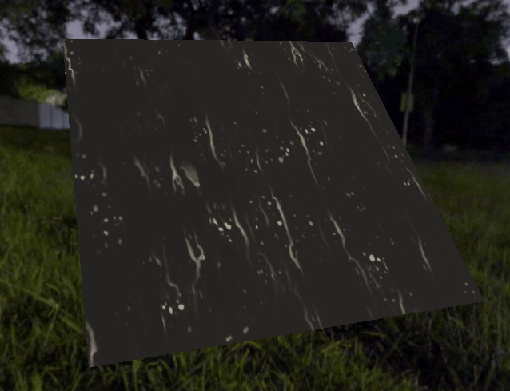
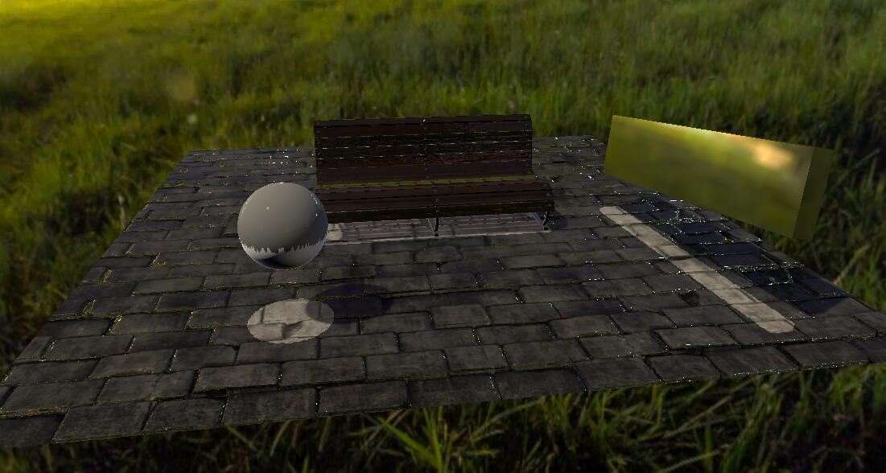

雨天地表积水和流动效果
RainSurface-Shader
这里只是初步实现，用于验证想法是否可行
完整的将在未来整合到屏幕后期中来实现
效果预览
参考目标
实现效果


效果分析
效果可基本分成三大块
- 表面积水
- 涟漪动画
- 流动轨迹
每个都不难，基本都属于以前用过的知识
难点雨滴涟漪和流动的实现步骤和素材在 Rainy Surface Shader 这篇文章里都有讲解
这里在Unity中实现有细节上会不一致 最终效果是相似的
素材说明
新建一个 SurfShader 在这个的基础上一步步扩展
主要贴图一张，雨滴和流动法线两张

R-雨滴涟漪 G-轨迹遮罩 B-流动遮罩
R 通道单独运算产生动画
GB 结合做出流动效果
表面积水
积水的效果是通过改变光滑度和法线来实现的
根据表面湿润程度插值即可，不同光滑度对比如下

可以看出单独的光滑不能带来湿润的效果
要辅助以颜色加深来看清反射的内容
然后是遮罩，类似消融的效果来模拟积水过程
因为积水边缘的反光一般很明显，对遮罩的效果简单power一下
代码如下
1 | fixed rainMask = tex2D(_RainMaskTex, IN.uv_MainTex).r; |
效果已经不错了

涟漪动画
雨滴涟漪的实现很多，参照Rainy Surface Shader这篇文章中介绍的一步步迭代
采样贴图的R通道，与时间进行运算得到淡入动画
UV偏移再做一次叠加输出，得到没有明显重复感的动画
代码如下
1 | fixed Rinple(fixed rinple1, float time) { |
效果如下

相同的操作对法线也来一遍
流动轨迹
采样贴图的 G 通道得到轨迹，采样 B 通道并滚动 UV
两者相乘即可得到轨迹动画效果
效果如下

相同的操作对法线也来一遍
调参混合
整理各个功能的参数，并把他们纳入的湿度和 Mask 的控制下
将湿度分三层，隔离参数区间，区分光滑度，暗度和动画强度
区分出来潮湿，积水，流动三级效果
一波操作之后我们实现了原博客效果的80%，还有20% 来自与旋转
我们发现原博客的面片是可以转动移动的，准备开始改进
初步改进
世界空间
积水的 Mask 和 雨滴涟漪 应该是世界空间的
这样多个地块拼接或者对象移动的时候观感才是正确的
法线朝向
涟漪应该只出现在和雨滴运动相对的方向
我们加入落雨方向与世界空间法线运算得到方向遮罩
滑落的水珠应该只出现在朝上倾斜的面上
同样世界法线和朝上的向量运算得到方向遮罩
效果

再次改进
目前的效果已经达到了我们的预期，但并不能直接放到项目里使用
改动成本高，计算量也大，调节不方便
空间遮罩也不好解决，房檐下不落雨之类实现不方便
好的解决应该把整个效果都放到后期处理中
在光照之前通过 CommondBuffer 拿到 Gbuffer
修改对应的参数，插入涟漪和水珠
目前已经初步扫清了障碍
如下图，所有的效果都在后期中进行

待实现完成之后进行说明